The Importance of Attack Surface in Threat Intelligence
Today, classical threat intelligence models are falling short. The concept of External Attack Surface, which has recently entered the literature, has shown us this inadequacy and has closed the deficiencies. This concept has brought a new perspective to threat intelligence. The concept of Extended Threat Intelligence (XTI) has gained more popularity apart from classical intelligence. To define, XTI, unlike CTI, creates an attack surface belonging to the organization in order to produce intelligence specific to the organization. Thanks to this attack surface, organizations gain visibility. This visibility can be a forgotten endpoint or a forgotten subdomain. The main interest at this point is that organizations now know their inventories and clearly know which assets to defend against.
Determining the Attack Surface
When creating the attack surface, domains, subdomains, websites, login pages, CMS applications, technologies used on websites, IP addresses, IP blocks, DNS records, C-level employee mails, network applications, operating systems, bin numbers, and swift codes, and SSL certificates will be included. We will determine all these by proceeding through the main domain, which was provided to us by the organization as per the scenario.
Domains
The only information that will be given to us in the first place will be the primary domain of the organization. We will try to create the entire entity structure over this domain. In the sample scenario below, an asset inventory of Abanca, a bank located in Spain, will be created.
Main Domain: abanca.com
Related Domains:
In order to find other domains of the company, we can find domains that provide redirects to the main domain. We can use the host.io service for this. Host.io will provide us with all the domains hosted on the same IP, the domains hosting the relevant domain within the website, and other domains hosted by the relevant domain within the website, apart from other domains that provide redirection to the relevant domain. Not all domains obtained may belong to the organization. We can decide which domains belong to the organization and which ones don’t by checking the whois outputs of the domains or by looking at their content.

When we search the abanca.com domain on host.io, we can also see other domains hosted on the same IP address in the “Co-Hosted” section.

In a subsection, we can view other domains that contain our relevant domain, and after making the necessary verifications, we can include these domains in our asset list.

In the “Links to” section, we can view other domains that our domain hosts within the website.
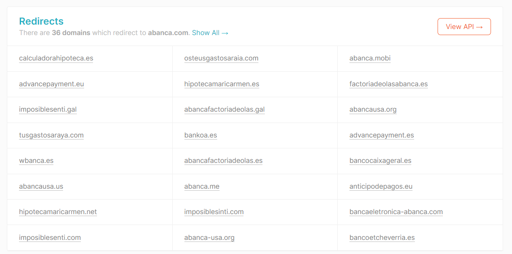
In the Redirects section, we can view other domains directed to our domain.
Since the number of domains displayed on the screen is limited, we can obtain all domains via the API by becoming a member.
As a secondary method, we can find similar information in whois records of the primary domain we are working on by performing a Reverse whois lookup (Reverse by Org Name, reverse by Registrant Mail, etc.) for certain information.

For example, when we look at the whois information of the abanca.com domain, we see that the organization section contains the name of the company. We will be able to see all other domains registered under this organization name when we reverse the organization name. We will use the reverse whois tool at viewdns.info for this.
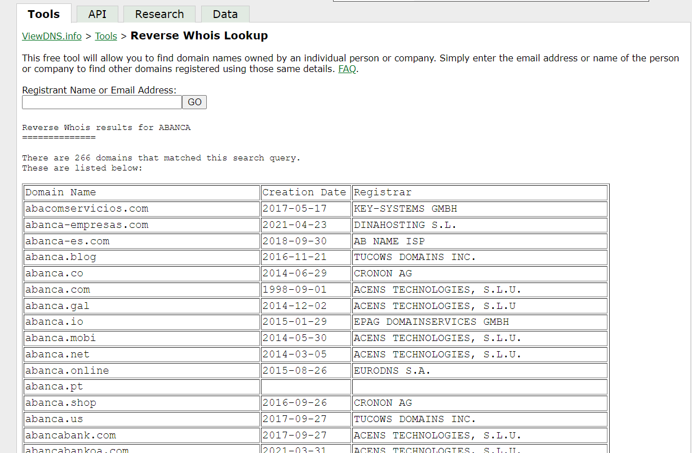
266 domains containing this name are displayed when we searched “ABANCA” in the search section. These domains are potentially our domains. After we verify each one, we can add it to our inventory.

Alternatively, we can use the whoxy.com tool to do the same check. With this tool, we can reverse whois in 4 categories with the help of this tool.
As a third method, we can examine the DNS records of the relevant domain and reach other domains using the same DNS records, check these domains and add them to our inventory after verification.
We can check the DNS records with the “dig” command on the command line or we can use the tools that work online on the internet. In this example, we are viewing DNS records using the dnslytics.com tool. In order to discover potential domains, we need to reverse records that are managed by the organization. For example, a shared nameserver belonging to any hosting company hosts too many domains, and these domains mostly do not belong to us. Therefore, it is useful to examine the records of the mail server or nameserver that belongs to the organization. In this example, the ns2.abanca.com record stands out. When the related nameserver is reversed on the same tool, it shows that 98 other domains are hosted on this nameserver.

All the domains that are listed here are potentially our own, as they are hosted on our own nameserver. After performing the verification, we can add them to our inventory.
Subdomains
There are many tools that are available online or on the command line to find subdomains. We will now use 4 of them. These tools are SecurityTrails, Aquatone, Sublist3r, and Assetfinder.
SecurityTrails can be used on the command line via the hacktrails tool or API or queries can be made from the visual interface. It produces high-quality output.
https://securitytrails.com/list/apex_domain/abanca.com

Secondly, the Sublist3r tool runs on the command line and finds and outputs findings from multiple sources. It is run with the command in the screenshot.
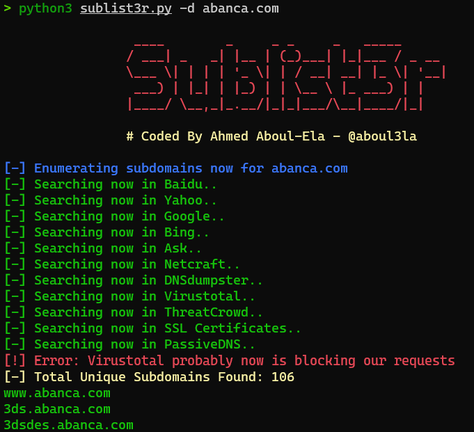
Thirdly, “Aquatone” collects data and produces output by querying from multiple sources, just like the Sublist3r tool. If you enter the necessary API keys in the configuration files for the resources that require API keys, the number of subdomains it finds will increase. Aquatone can check the activity status of the subdomains it finds with the help of the scan module it contains, and it can check whether there is a takeover vulnerability on the subdomains it finds with the help of the takeover module it has.

Finally, with the “assetfinder” tool, you can query subdomains and obtain data from many sources.

One of the most important points when searching for a subdomain is to get as much data from as many sources as possible. After collecting and bringing all the data together, we will have a fairly large list of subdomains.
Websites
In order to find the websites, we need to send requests to the domains and subdomains we find. We obtain our active websites by examining the domains or subdomains that respond to our HTTP/HTTPS requests.
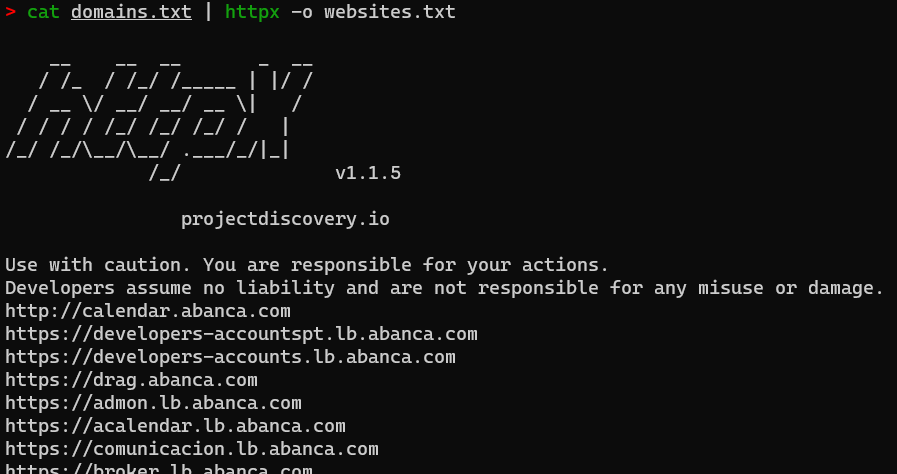
As you can see in the above screenshot, when we list all of our domains and scan them on the “httpx “ tool, it will list all the domains that respond to our http/https requests. As an alternative to “httpx” tool you can also use “httprobe” tool which is a tool that will meet your needs with similar functions.
Login Pages
Detecting websites with login screens is a bit more challenging than usual. If you wish, you can go through the websites you find manually and separate those with a login screen and list them together. Since this process requires complete manpower, it will be an unnecessary and time-consuming process. Instead, this can be done with some simple scripts. The “python” language is a perfect fit for this process. Thanks to the many libraries it contains, we can do this with very few lines of code with very little effort. We can detect the login pages by sending requests to the websites we have and searching for clues for the login pages in the content of the returned response by using the requests and BeautifulSoup libraries in python. For this process, we first need to check the background code of the login page and look for some indicators that will give us a clue about whether there is a login page or not. We can simply look for answers to the following sample questions and try to figure out whether the page is a login page or not with the indicators and answers we have obtained:
-
Is the word “Login” or its corresponding phrase in any language possible on the page?
-
Are form tags used on the page?
-
Are there expressions such as “Username” or “Password” in the placeholder section of the input fields on the page?
-
Are there “Login” or similar expressions in the title or header of the page?
In short, if the script we wrote parses the content in the response to answer these questions, we can detect most of the login pages in a short time.
Technologies Used on Websites
The technologies used on the websites we detect will make an important contribution to us, especially in terms of vulnerability intelligence. For example, after we determine the CMS and the version used on a website, we can take quick action on the remediation if there is any matching vulnerability found in the product and the version used on the website in the CVEs we pull from our intelligence sources. There are multiple tools and manual methods to detect the technologies used on the websites. We will use https://soy.abanca.com/, one of the websites we have identified for testing purposes. First of all, we install the “Wappalyzer” tool (https://chrome.google.com/webstore/detail/wappalyzer-technology-pro/gppongmhjkpfnbhagpmjfkannfbllamg) in our browser in the Chrome Web Store. After opening soy.abanca.com on our browser, we click on the “Wappalyzer” tool icon in the upper right corner, the application gives us as much as it detects in terms of the technologies used on the page.
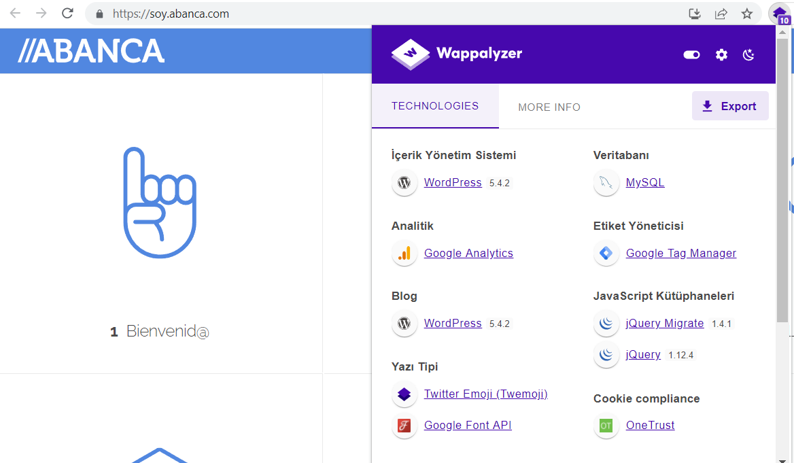
As you can see in the screenshot above, the content management system has listed all the information about the database and the libraries used as much as it can detect. “Whatruns”, “BuiltWith” and “Whatcms” applications can be used as an alternative to the Wappalyzer tool.
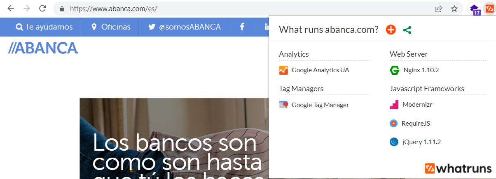
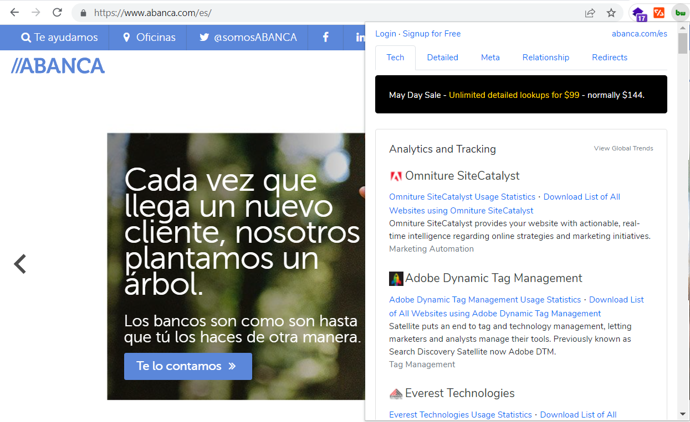
The above screenshots show that “Whatruns” and “BuiltWith” tools are installed as browser add-ons and work just like “Wappalyzer” tool.
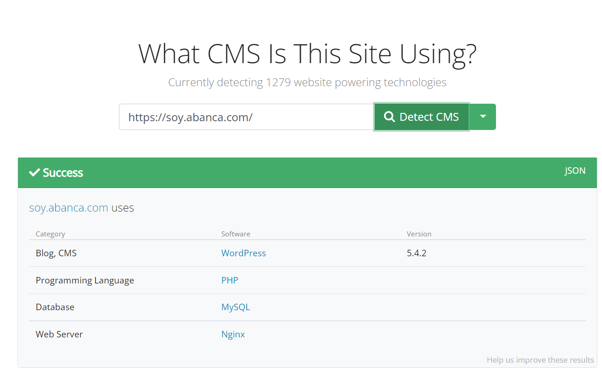
Unlike other tools, “Whatcms” is an online tool and it is available at whatcms.org. All you need to do is to enter the URL address you want to scan, and it will display the detections.
If you want to detect it manually rather than using a tool, you can examine the source code of the page and make a technology detection by viewing the file paths of the theme belonging to the content management system and the libraries given in the code, especially in the script tags.

Another tool-independent method would be to examine the header of the response returned from the page from the developer console. We can display information about the technologies used on the page within the header of the returned responses.
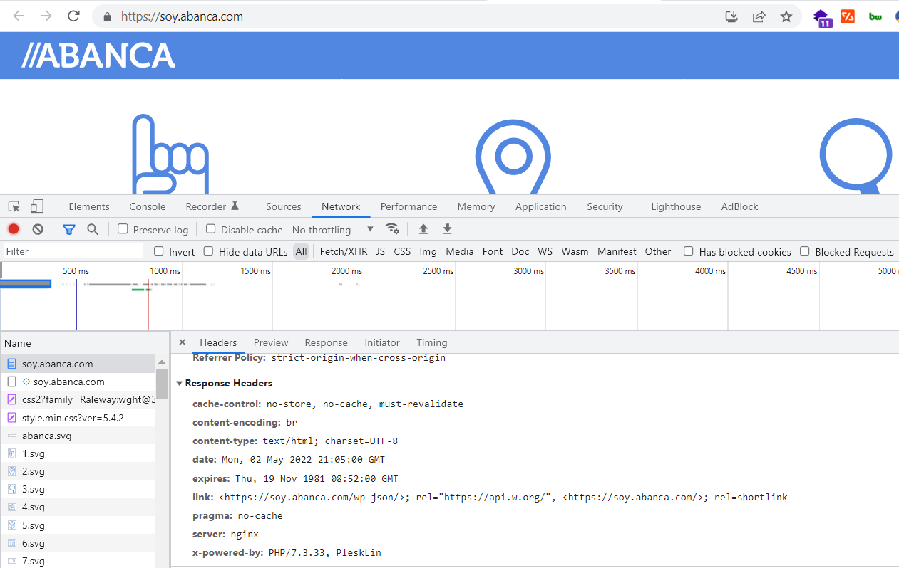
IP Addresses
IP addresses are one of the most important assets of our organization. There are serious risks involved when open ports on IP addresses are not checked regularly or if the ports are still used after the services running on these ports are outdated. Therefore, the monitoring of these ports and services and detecting the risks involved in a timely manner is vital for a network. We can make a list by analyzing the IP addresses of the domains and subdomains we found. In order to detect these IPs, we can collect the A records of the domains or detect the IP addresses by sending a request and resolving it. In addition, in order to detect all the active IP addresses contained in the IP blocks used within the organization, we can send requests to all the IPs in the block and select the active ones.
IP Blocks
Since IP blocks contain mostly the IPs owned by the organization, the IPs with the highest risk are within these blocks. Therefore, follow-up of these is very important. We can detect IP blocks by looking for patterns in the IP addresses we obtained from the domains and checking the whois information of consecutive IP addresses to understand whether they belong to the organization or not.
As a secondary method, we can search for the keywords of our organization by using the org parameter on Shodan. The org parameter is a search parameter used for the organization part of the IP addresses. For instance when we search for org:“Abanca” it will list the IP addresses with the word Abanca in the organization section. By examining these IP addresses, we can look at their whois information and find out whether they belong to the organization and which block they belong to.

In addition to Shodan, alternatives such as Binaryedge and Zoomeye can be used.
Lastly, you can also detect blocks by using online tools that make IP block associations over bgp.he.net and similar domain or IP addresses.
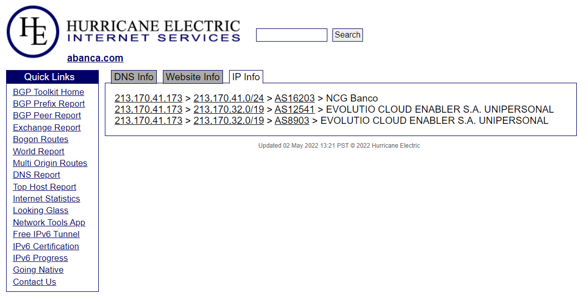
DNS Records
Monitoring DNS records is important for detecting unknown DNS record changes. You can use Google’s online dig tool or use websites like dnslytics.com to detect DNS records. In addition, DNS records can also be accessed with the dig command on the command line.
C-Level Employee Mails
For senior executives, email compromises may result in disaster. The data that’s transmitted within the mail traffic on a daily basis is crucial for the organization. Therefore, it is very important to monitor corporate email traffic as well as personal emails.


There are several tools that are frequently used to detect these e-mails. We recommend using a fake Linkedin account and a fake email address when using the tools. These tools work as chrome extensions. You can download the extensions from the Chrome Web Store or download them from their website and import them into chrome. These applications include “SalesQL”, “RocketReach”, “Apollo”, and “ContactOut”. All extensions work in the same logic. Basically, we just go to the person’s Linkedin profile and click on the extension. Extensions will list us the e-mail addresses they can detect.
Network Applications and Operating Systems
One of the most important steps for us to be able to track vulnerabilities actively or passively is to find all the applications and operating systems. All the methods mentioned in item 5 are also valid in this section. In addition, in this section, we can collect discovered services by querying our IP addresses via shodan with passive scanning or we can detect them via active scanning. Network applications and operating system detections can be made according to the responses to the requests we sent to the open ports of our previously removed IP addresses in our asset list
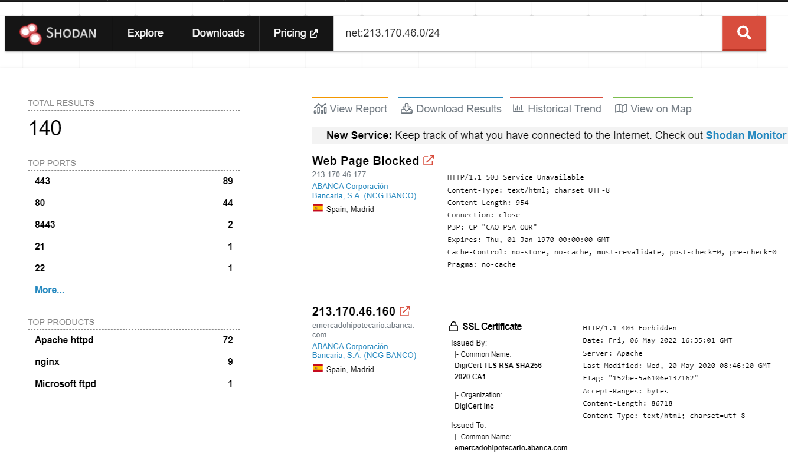
Bin Numbers and Swift Codes
Bin numbers and swift codes are one of the most important assets to be monitored for matters such as the detection of stolen credit cards on the intelligence side, which are of particular interest to fraud teams in banks. We will use public databases designed for the detection of bin numbers and Swift codes. There is more than one database to find the bin numbers of an organization. Some of those are sites like “bincheck.io”, “freebinchecker.com”, “bintable.com”.

For example, we can list the bin numbers of Abanca on the bincheck.io site by filtering the country and the bank names, as seen above. Other databases work in a similar way. There are sites such as “wise.com”, “bank.codes”, “theswiftcodes.com” to detect Swift codes. We can also obtain swift codes by making bank-based inquiries on these sites.

SSL Certificates
SSL certificates are one of the most important factors for secure communication. Therefore, we need to determine carefully if there is an SSL certificate on the domains we have detected and add it to our asset list. It is possible to collect SSL certificates manually on the site, but we prefer to use some tools to make it easier since this is a time-consuming process. The most common tools are “Censys” and “crt.sh”.
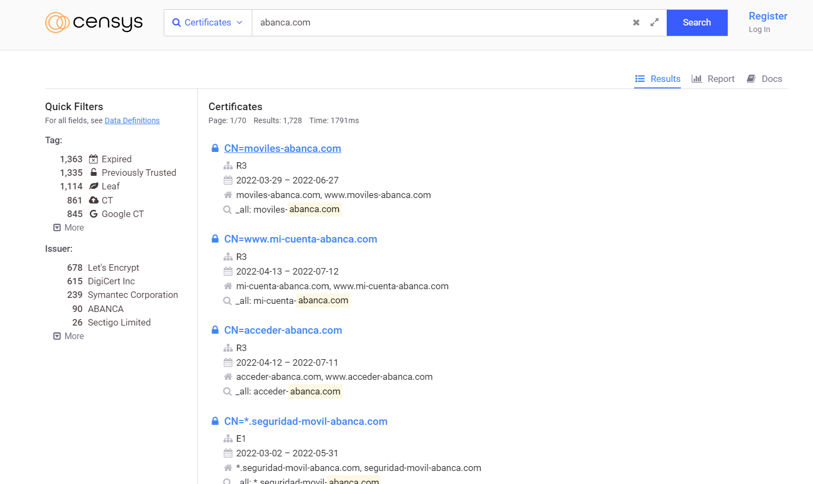
For example, the above screenshot shows that we are able to list all the certificates that contain the abanca.com domain on Censys. We can also search for the abanca.com domain on crt.sh, and it lists all the certificates with abanca.com in it.
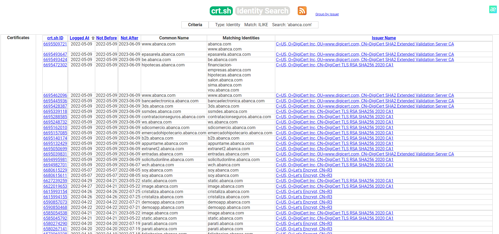
We can collect the SSL certificates quickly and easily using these tools.